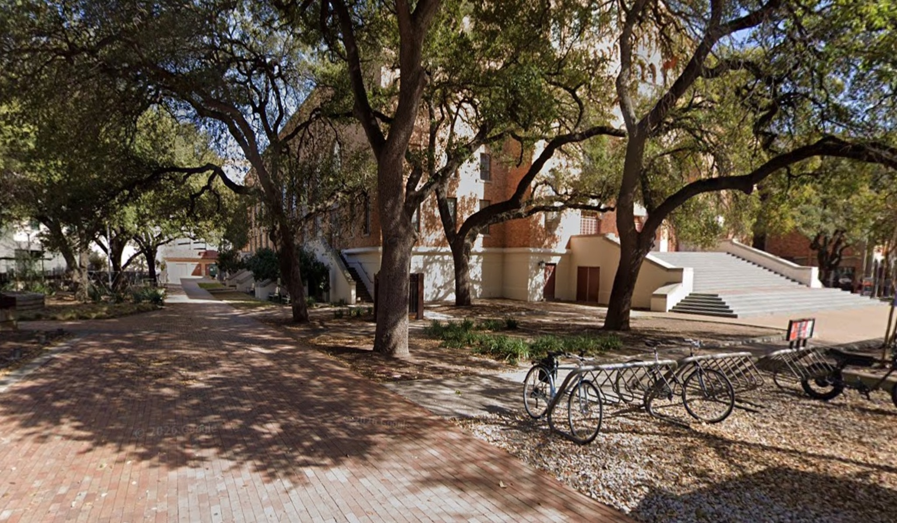
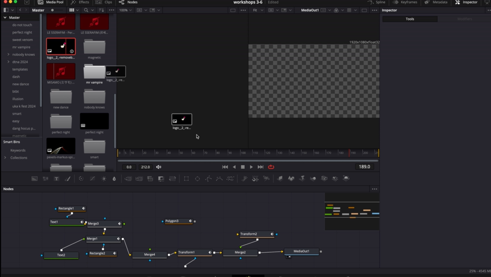

CSA Crimson
A beginner-friendly dance team where students learn and film dances taught and produced by other students.
Overview
I lead the entire filming process from planning through post-production, releasing a new video every month following a strict one-month timeline from teaching to release.
Teaching
Before I begin organizing dancers, I select several song options for our team members to choose from, and it goes to a vote. Once the song is decided, I schedule our practices over the next two weeks.
Filming
First, I reach out to videographers to find availability and a filming location. Second, I coordinate with our 7-8 dancers to find the best time, taking into account their schedules and the time of day I want to film.


Storyboarding
Once filming is scheduled, I focus on filming logistics, particularly storyboarding the final cover. I provide the videographer with a storyboard, a shot list, and reference videos, giving them a clear picture of the angles and shots I want at each point in the song.
Post-Production
After filming day, I personally edit each video. From over a hundred clips, I select the shot that best fits each section of the song, choosing takes that match the final vision and can be cut together into one cohesive video.

Release
I oversee the release process, making sure our editing team works quickly and closely with our publicity team so each video goes out on time, with a coordinated social media post, tracking deadlines to keep a consistent monthly release schedule.
Outcome
I track the success of each video and the satisfaction of each dancer via surveys. I use this information to provide a wider variety of opportunities to the team, ensuring 100% of our team members are able to participate and enjoy their experience.